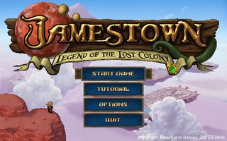
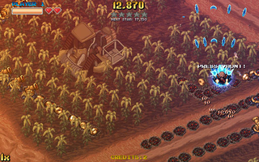

Jamestown
Dieser Artikel wurde für die folgenden Ubuntu-Versionen getestet:
Ubuntu 14.04 Trusty Tahr
Zum Verständnis dieses Artikels sind folgende Seiten hilfreich:
Jamestown: Legend of the Lost Colony  ist ein vertikaler Shooter, welcher in einem Paralleluniversum auf dem Mars stattfindet. Bis zu 4 Spieler können im Multiplayer-Modus mit den Steampunk-Waffen die Grenzkonflikte zu ihren Gunsten lösen...
ist ein vertikaler Shooter, welcher in einem Paralleluniversum auf dem Mars stattfindet. Bis zu 4 Spieler können im Multiplayer-Modus mit den Steampunk-Waffen die Grenzkonflikte zu ihren Gunsten lösen...
|  |  |
| Hauptmenü | Spielszene |
Installation¶
The Humble Indie Bundle #4¶
Das Spiel aus der Aktion The Humble Indie Bundle #4 herunterladen. Vor der Installation müssen die Ausführrechte [1] für die Datei gesetzt und anschließend die Installationsroutine aufgerufen [2] werden um das Spiel zu installieren z.B. nach ~/Spiele/jamestown:
./JamestownInstaller_1_0_1-bin
Nach erfolreichem Einspielen des Spiels ist es unter "Anwendungen -> Spiele -> Jamestown" zu finden.
Desura¶
Nach dem Erwerb des Spiels über die Internetseite oder den Client kann das Spiel installiert [3] und über diesen gestartet werden.
Steuerung¶
Ein Tutorial führt den Spieler in die Feinheiten der Steuerung ein. Zur Steuerung können Tastatur, Maus und Controller verwendet werden.
Konfiguration¶
Unter "Options" können die Lautstärke des Sounds und der Musik angepaßt werden. Ebenso sind Einstellungen an der Auflösung möglich und die Wahl ob das Spiel im Vollbild- oder Fenstermodus gespielt werden soll.
Tastenkürzel¶
| Tastenkürzel | |
| Taste(n) | Beschreibung |
Z /  | Feuer |
X /  | Spezialwaffe |
/  | Vaunt |
| ↑ + ↓ + ← + → | Steuerung |

Infobox¶
| Jamestown: Legend of the Lost Colony | |
| Originaltitel: | Jamestown: Legend of the Lost Colony |
| Genre: | Shooter |
| Sprache: | |
| Veröffentlichung: | 2011 |
| Publisher: | Final Form Games |
| Systemvoraussetzungen: | Intel Pentium 4 2.4 GHz/ Grafikkarte 256MB+ RAM (OpenGL 2.0) / 512 MB RAM / 250 MB Festplattenspeicher |
| Medien: | Download |
| Strichcode / EAN / GTIN: | - |
| Läuft mit: | nativ |

- Erstellt mit Inyoka
-
 2004 – 2017 ubuntuusers.de • Einige Rechte vorbehalten
2004 – 2017 ubuntuusers.de • Einige Rechte vorbehalten
Lizenz • Kontakt • Datenschutz • Impressum • Serverstatus -
Serverhousing gespendet von